Introduction
GERF is a Mathematica paclet that implements the Generalized Exponential Rational Function (GERF, [1]) expansion technique that helps acquire exact solutions of nonlinear partial differential equations. It transforms the PDE into an ordinary differential equation through a wave transformation and assumes the solution can be expressed as a finite polynomial in a generalized exponential rational function, called the ansatz or the trial solution. Substituting the ansatz into the reduced equation yields an algebraic system whose solutions provide exact closed-form wave solutions.
The method has emerged as an effective tool for obtaining exact solutions of NLPDEs. It has been successfully applied to a wide range of models arising in mathematical physics and applied mathematics, including various KP-, ZK-, BBM-, BLMP-, Klein–Gordon-, Riemann wave-, and spin-chain-type equations. By employing a rational ansatz constructed from exponential functions, the method provides a unified framework capable of generating diverse classes of solutions, such as hyperbolic, trigonometric, and rational wave structures. Its flexibility and broad applicability have contributed to its growing use in recent studies of nonlinear wave phenomena. Some applications of the method are mentioned in [2-5].
The package is available at the Wolfram paclet repository and development takes place at Github. Contributions are more than welcome! Current version is 1.2.0. If you use this package for research, see Citation below!
Installation
The paclet can be installed by running:
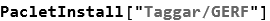
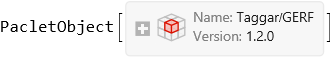
To load it, run:
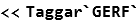
Overlook of the method
Suppose we begin with the (1+1)-dimensional Burgers’ equation:
Introducing the wave transformation η=a x+b t, we obtain the corresponding ODE
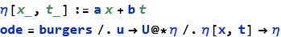
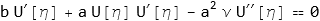
Applying balance principle on U''(η) and U(η)U'(η) we get N+2=N+N+1 to obtain N=1, hence a trial solution takes the following form:
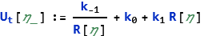
where R(η) is a generalized exponential rational function, say
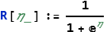
although ordinarily more general forms are considered. Substituting 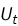
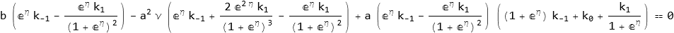
Simplifying and collecting coefficients of 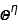
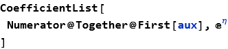
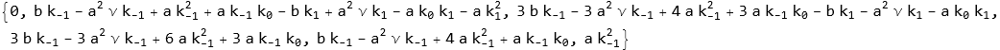
Simultaneously equating these to 0 returns in various solutions:
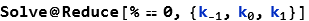
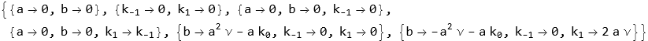
which result in corresponding closed-form solutions of the Burgers’ equation.
Application of GERF paclet
This whole process has been streamlined using the GERF paclet. For example, to obtain the solutions demonstrated above, one may simply do:
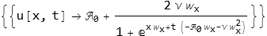
Here, 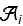 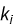 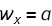 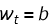
Plotting the solution for appropriate constant values:
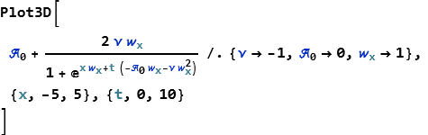
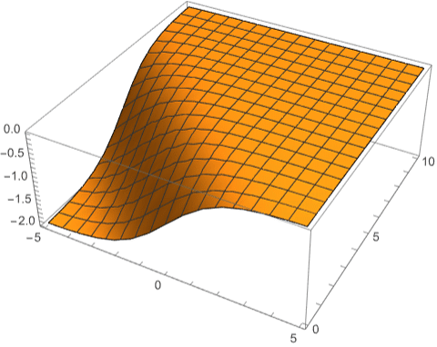
Taking another example: Calogero–Bogoyavlenskii–Schiff equation in (2+1)-dimensions:
Solve it using a different form of the generalized exponential rational function, and a custom wave transformation of η=x+y-c t:
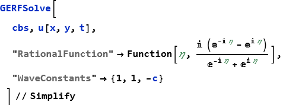
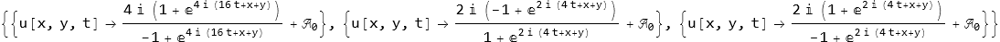
Plot it:
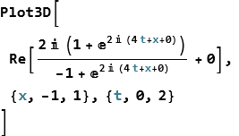
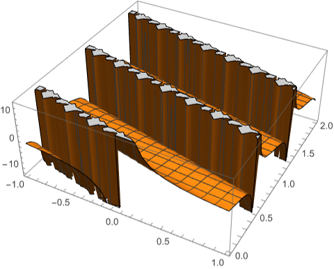
Note that the rational function above is nothing but exponential form of tan(η); one could also use:
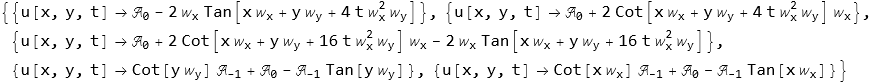
wherein the package automatically converts tan(η) to its exponential form. It is worth noting that not all rational functions result in meaningful solutions:
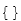
although more complicated forms could work:
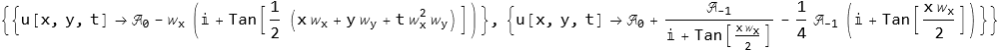
Fractional ordered equations
Not only integral but fractional ordered equations can also be solved. Consider the fractional version of burgers equation:
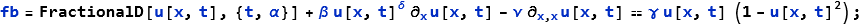
With δ=1, we solve using GERFSolve:
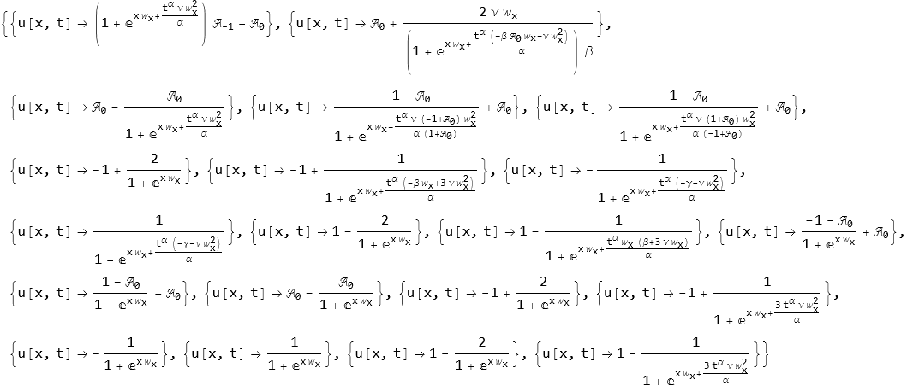
Plot one of these for different values of α:
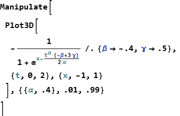
Nonlinear ODEs
Conversion of the given NLPDE into an NLODE is one of the steps for this method. As such, the package can also deal directly with an ODE input itself. Recall the ODE that we discussed earlier:
It can be solved using the trial wave transformation of η=1η:
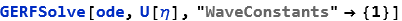
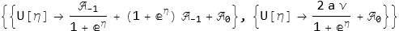
Systems of equations
The package also caters to systems of NLPDEs. For example, consider the coupled system:
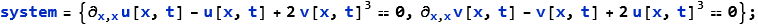
Solving it yields:
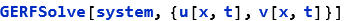
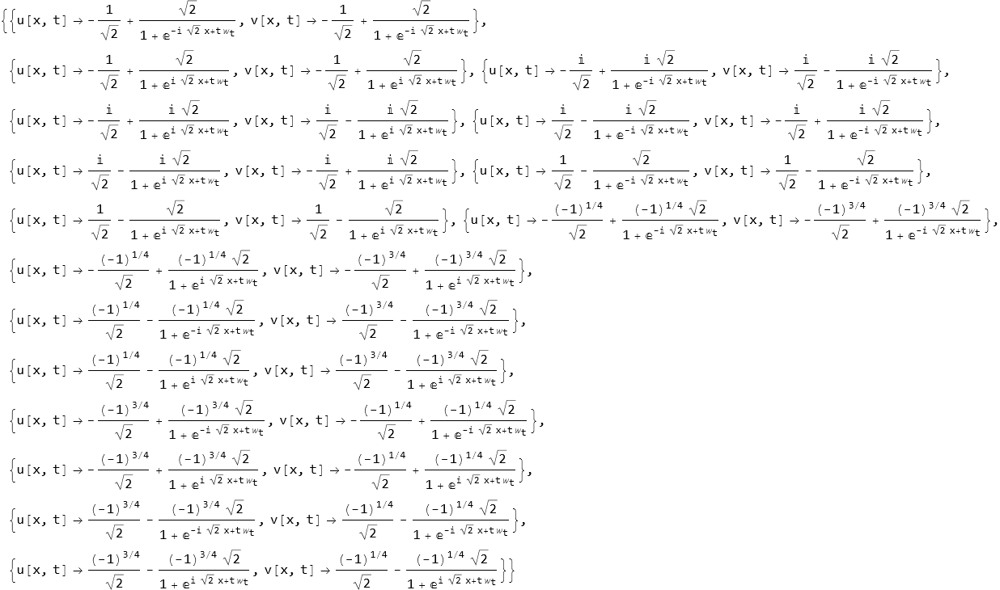
Plotting one of them:
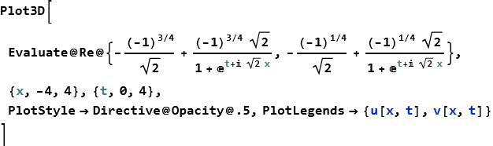
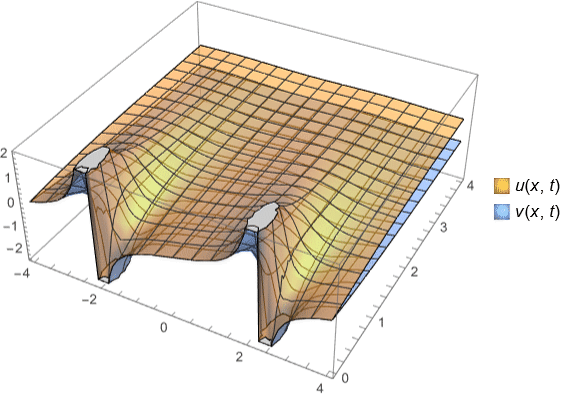
Another example is the model discussed in [5], given as:
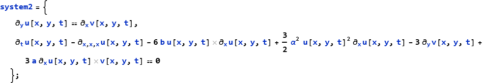
For ease of computation, let us take α=a=b=1. Then,
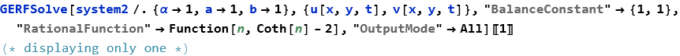
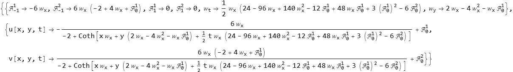
This is already comparable to the solutions that the authors have found in their work.
Concluding remarks
The GERF paclet provides a practical and automated implementation of the GERF method for obtaining exact solutions of nonlinear differential equations. As demonstrated, it supports ordinary, partial, fractional-order, and systems of equations while allowing flexibility in the choice of wave transformations and rational functions. Given the growing popularity of the GERF method and the plethora of research articles that are published left and right using it across diverse nonlinear models, an accessible computational implementation is of considerable value. By reducing the algebraic burden of the method and enabling rapid experimentation, the paclet serves as a useful tool for researchers working on exact analytical solutions of nonlinear differential equations.
Citation
If you use this GERF package for research, kindly cite:
Taggar, N. (2026). GERF: A Mathematica paclet for the generalized exponential rational function method (1.2.1). Zenodo. https://doi.org/10.5281/zenodo.20706333
References
[1] Ghanbari B and Inc M 2018 A new generalized exponential rational function method to find exact special solutions for the resonance nonlinear Schrödinger equation Eur. Phys. J. Plus 133 142
[2] Rasool T, Hussain R, Rezazadeh H and Gholami D 2023 The plethora of exact and explicit soliton solutions of the hyperbolic local (4+1)-dimensional blmp model via gerf method Res. Phys. 46 106298
[3] Sa∨glam Özkan Y 2021 The generalized exponential rational function and elzaki–adomian decomposition method for the heisen-berg ferromagnetic spin chain equation Mod. Phys. Lett. B 35 2150200
[4] Kumar S, Dhiman S K and Chauhan A 2023 Analysis of lie invariance, analytical solutions, conservation laws and a variety of wave profiles for the (2+1)-dimensional riemann wave model arising from ocean tsunamis and seismic sea waves Eur. Phys. J. Plus 138 622
[5] Sachin Kumar, Nikita Mann, Harsha Kharbanda et al. Dynamical behavior of analytical soliton solutions, bifurcation analysis, and quasi-periodic solution to the (2+1)-dimensional Konopelchenko-Dubrovsky (KD) system, 30 November 2022, PREPRINT (Version 1) available at Research Square